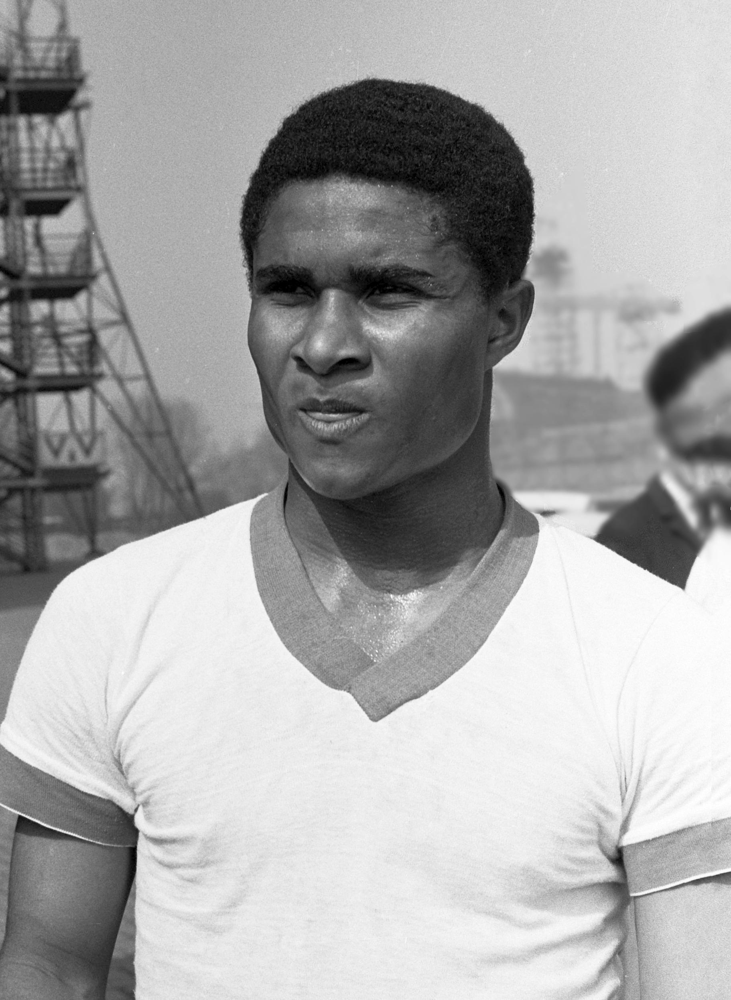
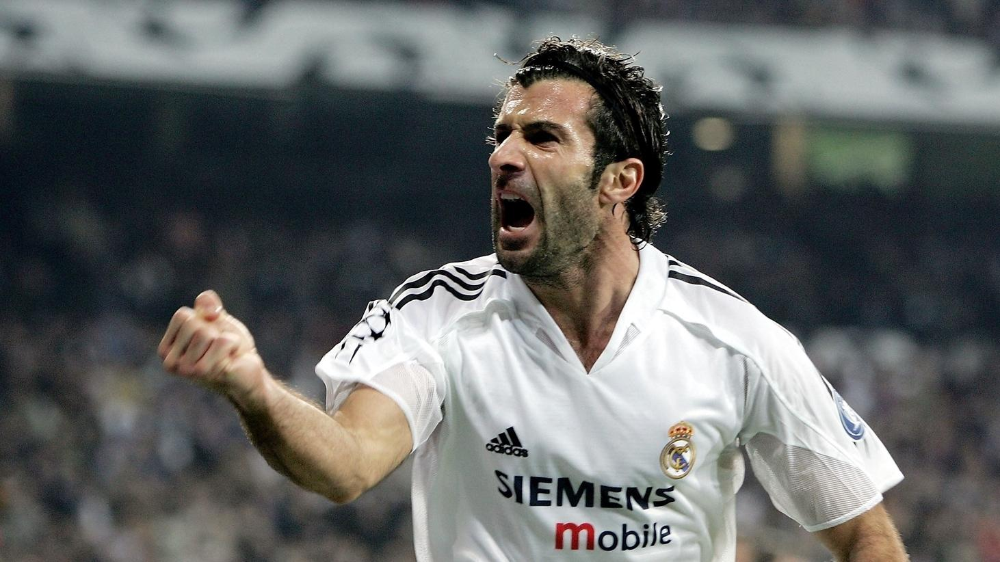

Nombre oficial: Selección Nacional de Portugal
Confederación: UEFA
Capitán: Cristiano Ronaldo
Director Técnico: Roberto Martinez
Primera participación mundialista: 1966
Ranking FIFA: Quinto
• Portugal es una de las selecciones más importantes de Europa y ha participado en numerosas Copas del Mundo. A lo largo de su historia ha destacado por contar con un estilo de juego técnico y ofensivo.
• Su mejor actuación en un Mundial fue en 1966, cuando alcanzó el tercer lugar gracias al extraordinario desempeño de Eusébio, quien terminó como máximo goleador del torneo.
• Portugal se ha mantenido entre las mejores selecciones del mundo, impulsada por figuras como Cristiano Ronaldo que han consolidado al equipo como uno de los principales candidatos en las grandes competiciones.
| Estadística | Datos |
|---|---|
| Participaciones | 8 |
| Títulos Mundiales | 8 |
| Mejor Resultado | 3.er lugar (1966) |
| Última Participación | 2026 |
| Semifinales Alcanzadas | 2 |
| Confederación | UEFA |
1966 • 1986 • 2002 • 2006 • 2010 • 2014 • 2018 • 2022 • 2026

Máximo goleador y jugador con más partidos en la historia de Portugal.

Figura del Mundial de 1966 y considerado uno de los mejores futbolistas portugueses de todos los tiempos.

Ganador del Balón de Oro en 2000 y una de las mayores leyendas del fútbol portugués.